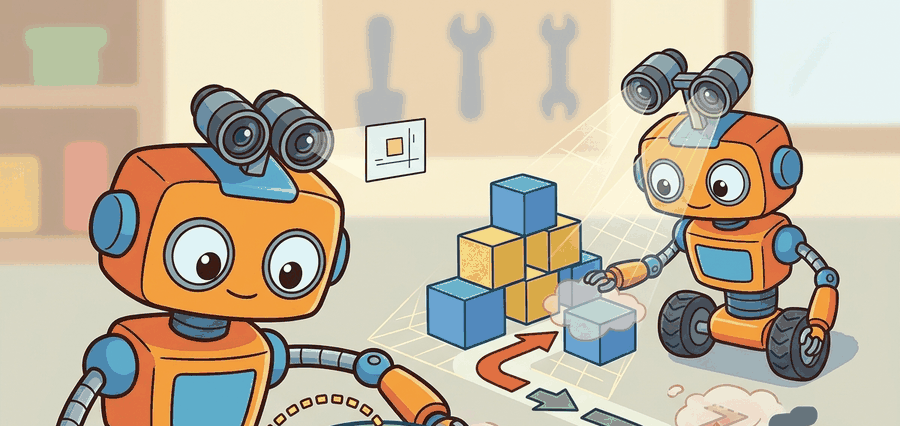

For Why 3D matters for manipulation and navigation, geometry earns its place when it changes reachability, clearance, grasping, exploration, or recovery in the log.
A Patient Embodied AI Agent

This section assumes familiarity with rigid-body kinematics from section 5.6 and sensor hardware from section 8.2. The geometric predicates introduced here are applied to concrete 3D representations in sections 28.2 through 28.5, and the action consequences reappear in section 30.4 (traversability mapping) and section 43.1 (grasp pose estimation).
A robot arm reaching for a mug sees a convincing 2D photograph of the handle. Without knowing the handle is 11 cm away, rotated 40 degrees, and partially behind a bowl, the grasp fails every time. Modern manipulation and navigation systems fail not because their cameras are bad but because flat images strip out exactly the information a body needs: clearance to fit through a gap, the precise surface to contact, the hidden volume behind an obstacle. Right now, neural scene representations have finally made dense, real-time 3D practical on embedded hardware, opening a new generation of capable robots. In this section you will trace how each geometric predicate, reachability, clearance, occlusion, and metric distance, maps directly to an action your robot can or cannot take.
Problem First: Why This Representation Exists
3D perception matters only when it changes reachability, clearance, grasp pose, or navigation risk. The action loop should record camera geometry, depth validity, robot frame, uncertainty, latency, selected action, and the failure label for geometry-induced mistakes. Treat the representation as a typed state estimate, not as a visualization.
For Why 3D matters for manipulation and navigation, the representation is embodied only when it changes an admissible action, safety margin, exploration request, or recovery path.
Figure 28.1.1 should be read as the Why 3D matters for manipulation and navigation handoff diagram: sensor evidence, geometric representation, uncertainty, latency, and action consumer are separate failure points.
Mathematical Core
A robot action usually depends on geometric predicates: distance, reachability, support, and collision.
$a\ \mathrm{allowed}\iff d(q,\mathcal O)>\epsilon,\quad p_{\mathrm{target}}\in\mathcal R(q),\quad \mathrm{support}(p_{\mathrm{target}})=\mathrm{true}$
The configuration $q$ is allowed only if obstacles are far enough away, the target point lies in the robot's reachable set, and the target has the support needed for the action. A 2D image alone cannot answer those predicates reliably.
- Identify the task predicate: reach, traverse, avoid, place, inspect, or dock.
- Determine which 3D variables the predicate needs.
- Choose the smallest representation that can answer those variables under latency constraints.
- Reject representations that render nicely but cannot update after motion or contact.
| Design Choice | Use When | Control Risk |
|---|---|---|
| Manipulation | Contact pose, surface normal, clearance, support | Wrong local geometry causes bad grasp or collision. |
| Navigation | Free space, obstacle distance, slope, traversability | Unknown space can be mistaken for safe space. |
| Humanoid motion | Foot support, hand contact, body clearance | Whole-body motion amplifies small map errors. |
Consider a specific case: the Boston Dynamics Spot robot navigating a warehouse uses a combination of stereo cameras and lidar to maintain a traversability map updated at 10 Hz. The map encodes slope, step height, and ground firmness per 5 cm cell. Without that per-cell geometry, a flat RGB image of a wet floor and a dry floor look identical, and the robot cannot distinguish a slippery surface (high slip risk, low traversability score) from a safe one. Similarly, the Franka Emika Panda arm in typical pick-and-place research uses a wrist-mounted depth camera to recompute grasp pose at each attempt rather than relying on a fixed scene model, because objects shift by millimeters between approach phases and a stale model produces collisions even when the initial reconstruction was accurate.
Worked Miniature
Code Fragment 28.1.1 computes whether a candidate target is reachable and collision-safe in a tiny 2D slice. The same predicates become 3D reachability checks in a real planner.
# Test a target with reachability and obstacle clearance predicates.
# The same predicate pattern scales to 3D planners and robot arms.
import numpy as np
robot_xy = np.array([0.0, 0.0])
target_xy = np.array([0.55, 0.20])
obstacle_xy = np.array([0.42, 0.18])
reach_radius_m = 0.75
clearance_min_m = 0.18
reachable = np.linalg.norm(target_xy - robot_xy) < reach_radius_m
clearance = np.linalg.norm(target_xy - obstacle_xy)
allowed = reachable and clearance > clearance_min_m
print(round(float(clearance), 3))
print(allowed)The expected two-line output should be read together: the target is close enough to reach, but only 0.132 m from the obstacle, which violates the 0.18 m clearance requirement. The decisive value for action is therefore the boolean False, not the visual presence of the target.
Before computing surface normals or running a collision-clearance query on a raw depth point cloud in Open3D, call point_cloud.remove_statistical_outlier(nb_neighbors=20, std_ratio=2.0) to strip sparse outlier points at depth boundaries. Skipping this step lets sensor noise at object edges produce wildly tilted normal vectors, which causes the reachability predicate to reject valid grasp poses or accept unsafe ones near table edges. The two parameters nb_neighbors and std_ratio control aggressiveness: tighten std_ratio to 1.5 for noisy structured-light sensors such as the Intel RealSense D435, and loosen it to 3.0 for lidar data where outliers are rare. Always run this filter before normal estimation, not after, because normals cannot be corrected once computed from corrupted point positions.
Open3D, Drake, ROS 2 planning stacks, and simulator scene graphs provide practical routes for computing geometry predicates. The shortcut saves implementation time, but the builder must choose the representation that matches the action predicate.
A beautiful reconstructed scene can still be useless for control if it cannot answer free-space, reachability, or support queries at the rate the robot needs.
Depth sensors report zero or maximum range for transparent, reflective, and very dark surfaces. A glass bottle on a table reads as empty space to a structured-light depth camera such as the Intel RealSense D435, so the robot's collision check passes and the gripper drives straight into the obstacle. The fix is not to improve rendering quality but to maintain a per-voxel uncertainty flag and refuse to act when the relevant region has low-confidence depth returns. Logging the uncertainty field alongside the action label is the only way to reproduce this class of failure during post-hoc debugging.
A humanoid robot stepping over a cable needs a 3D estimate of cable height, foot clearance, and support region. A camera label saying cable is not enough to plan the step.
For Why 3D matters for manipulation and navigation, the perception result must answer what action changed, what uncertainty changed, and what log would reproduce the decision. Otherwise the output is still visualization, not embodied evidence.
Debugging And Evaluation
For Why 3D matters for manipulation and navigation, evaluate the representation inside the consuming action loop with calibration, frame transform, representation version, latency, selected action, and failure label.
For Why 3D matters for manipulation and navigation, perturb exactly one geometric assumption, such as depth dropout, scale, occlusion, pose drift, motion, or calibration, then record the action change.
Robotics research is moving toward hybrid scene state: metric geometry for safety and contact, object-centric memory for reasoning, and neural fields for dense appearance. The challenge is keeping the representation updateable during real interaction.
Section 28.2 makes the 3D argument concrete by showing how depth pixels are back-projected into metric point clouds, the most direct way to answer the geometric predicates introduced here.
Section References
Open3D. Geometry documentation. https://www.open3d.org/docs/release/tutorial/geometry/index.html
Practical reference for point clouds, meshes, and geometry operations.
Nerfstudio. Splatfacto documentation. https://docs.nerf.studio/nerfology/methods/splat.html
Explains how 3D Gaussian Splatting stores explicit volumetric Gaussians for fast rendering.
Can you name the representation, the consuming action, the uncertainty or freshness field, and the failure label for Why 3D matters for manipulation and navigation? If any one is missing, the section is not yet ready for a robot replay log.
3D matters when the robot must answer geometric predicates that pixels cannot answer reliably: can I reach, fit, support, avoid, or move there now?
For one manipulation task and one navigation task, list the exact 3D predicate that a 2D detector cannot answer by itself.